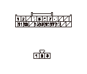
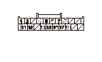
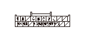

オーディオ＆ビジュアル システム症状別故障診断 - 音声認識による操作ができない
音声認識による操作ができない
NAV.システム自己診断による確認
1-1
イグニッション スイッチをON（
II
）にする
1-2
NAV.システム自己診断の‘‘マイク・ステアリングスイッチ’’を行う
◆ 正常か
YES
-
取扱説明書で音声操作の方法を再確認する
NO
-
•
マイク入力レベル測定モードでインジケータに反応がない場合は、ステップ
3
へ進む
•
NAV.ガイド/HFTスイッチを操作してもインジケータが緑に変化しない場合は、ステップ
2
へ進む
NAV.ガイド/HFTスイッチの点検
2-1
NAV.ガイド/HFTスイッチを点検する
◆ 正常か
YES
-
コードまたはケーブル リールの不良
NO
-
NAV.ガイド/HFTスイッチを交換する
AVNユニットとマイク間の断線点検
3-1
イグニッション スイッチをOFFにする
3-2
マイク3Pカプラの接続を外す
3-3
AVNユニットを取外し
、AVNユニットBカプラ（20P）の接続を外す
3-4
AVNユニットBカプラ（20P）のNo.15端子とマイク3PカプラのNo.1端子間の導通およびAVNユニットBカプラ（20P）のNo.16端子とマイク3PカプラのNo.2の端子間の導通を点検する
◆ 導通があるか
YES
-
ステップ
4
へ進む
NO
-
コードの断線

AVNユニットとマイク間の短絡点検1
4-1
AVNユニットBカプラ（20P）のNo.15端子とボディ アース間の導通を点検する
◆ 導通があるか
YES
-
コードのボディ短絡
NO
-
ステップ
5
へ進む

AVNユニットとマイク間の短絡点検2
5-1
AVNユニットBカプラ（20P）のNo.7端子とNo.15端子間の導通およびNo.15端子とNo.16端子間の導通を点検する
◆ 導通があるか
YES
-
コードの短絡
NO
-
マイクを交換し
、症状が改善されない場合は
AVNユニットを交換する
